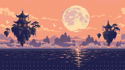
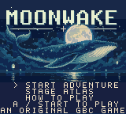
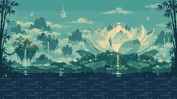
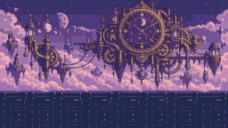
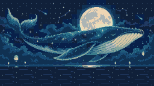

01 / SAFFRON HARBORMOONWAKE A POSTCARD FROM THE SKY SEA
An original adventure for Game Boy Color & Chromatic
The moon fell asleep.
You brought a scarf.
A little hare. A comet-red scarf. A sea floating above the world. Run, leap, and thread through lanterns to bring the morning home.
12 stages · 4 painted worlds · 36 secret moon seals
MADE FOR SMALL SCREENS. BUILT FOR BIG DREAMS.

160 × 144 · THE ACTUAL CARTRIDGE GAME

02 / JADE MONSOONRain that rings.

03 / VIOLET ENGINESA night in motion.

04 / MOONWHALEA dream going home.
Find your rhythm.
← → run. Z jumps; hold it to reach higher. Land softly or bounce off a wandering beetle.
Follow the light.
X sends your scarf flying. Land, strike a foe, or touch a lantern to refill your dash. Chain the lights to reach the secret upper routes.
Leave a little stardust.
Find three moon seals in every stage. Beat its par time for an S rank. Enter pauses and opens the atlas. Shift returns to your checkpoint.
An original native Game Boy Color game. Progress saves on the cartridge. The preview runs the compiled ROM with WasmBoy 0.7.1 · GPL license. Eight original chiptune themes · Game notes.